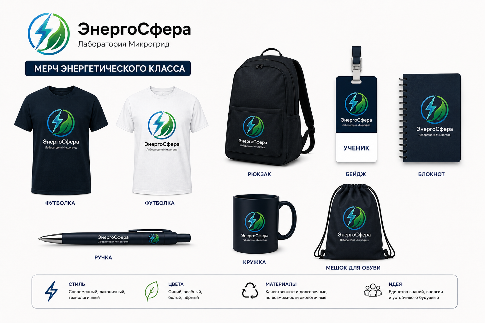

Актуальность исследования
МБОУ «СОШ №58 имени М.В. Овсянникова» города Курска является крупной точкой притяжения талантливых детей Курской области. Курский регион — это мощный энергоизбыточный кластер (Курская АЭС, Курскэнерго), испытывающий постоянную нехватку молодых специалистов в области интеллектуальной энергетики и систем Smart Grid.
При этом текущее техническое состояние материальной базы школы представлено классическим кабинетом физики советского типа. Темы возобновляемой энергетики изучаются чисто декларативно, за весь курс физики им отведено не более 3 часов теории. Учащиеся не имеют доступа к реальным приборам генерации, распределения и ИТ-мониторинга ресурсов.
Федеральный опыт и лучшие практики
Проект лаборатории не является абстрактным — мы переняли и адаптировали сильные стороны трех лучших образовательных моделей России:
- Энергоклассы ПАО «РусГидро»: Заимствована блочно-модульная система обучения от базовой электродинамики к расчетам сложных гибридных систем.
- Сеть Атомклассов (Росатом): Внедрена идея единого цифрового пространства со сквозным сбором телеметрических данных и датчиков.
- Технопарки «Кванториум»: Использован модульный принцип планировки с мобильной мебелью для быстрой смены форматов уроков.
Опрос 15 старшеклассников СОШ №58
"Нам бы хотелось своими руками настраивать контроллеры, управлять табло умного дома и видеть реальный эффект экономии."
— Из анкеты Елизаветы А., 9 класс
Девиз: Понимаем энергию прошлого — управляем энергией будущего!
Пространство площадью 68 кв.м полностью переформатируется под пятизональный интерактивный хаб:
1. Хаб био- и кинетического синтеза
Интеграция передовых технологий: входная зона оснащается скрытыми под покрытием пьезоэлектрическими матами, преобразующими энергию шагов учеников на переменах в электричество. Оконные проемы оборудуются настенными фотобиореакторами со штаммами микроводорослей Хлорелла (Chlorella vulgaris), которые поглощают CO2, нормализуют климат в классе и вырабатывают биоэлектричество за счет биофотовольтаики.
2. Зона Smart Grid и Умного Дома
Интерактивный физический распределительный щит нагрузок, где школьники с помощью плат Arduino и Raspberry Pi пишут алгоритмы энергобаланса.
3. Водородная лаборатория «Zero Emission»
Комплект безопасного оборудования Horizon. Избыток энергии от солнечных панелей направляется на электролиз воды, накапливая водород (H2), который при пиковых нагрузках через топливные элементы бесшумно преобразуется обратно в ток.
4. Лекторий-Трансформер & ИТ-зона коворкинга
Мобильные капсульные столы, маркерные стены для фиксации идей, интерактивная ЖК-панель 65" и мягкие пуфы для командной работы над кейсами.
Эко-дизайн и Эргономика
Цветовой код основан на премиальной светлой палитре с глубокими синими акцентами. Освещение — адаптивное диммируемое LED, автоматически подстраивающееся под интенсивность естественного солнечного света. Мебель выполнена из сертифицированных переработанных материалов.
Токены автоматически начисляются ИИ-агентом за успешное интеллектуальное энергосбережение корпуса.
Елизавета А.
Ученица • 9 «Е» класс
Активность в ЭнергоСфере
Сквозной образовательный трек по возрастам
Платформа работает непрерывно, встраиваясь как в урочную сетку физики и химии, так и в блок дополнительного образования:
| Классы | Образовательный модуль | Ключевые навыки и Soft/Hard Skills |
|---|---|---|
| 5–7 классы (Пропедевтика) | Кружок «Эко-Драйв». Игровая геймификация, квесты по бережливому потреблению ресурсов. | Формирование бережного отношения к природе, сборка простых конструкторов на солнечных батареях, базовое системное мышление. |
| 8–9 классы (Практика) | Модульный курс «Основы современной энергетики» (34 часа). Физический практикум. | Электродинамика, законы сохранения, расчет КПД систем генерации, проведение энергоаудита здания школы №58. |
| 10–11 классы (Профессионалы) | Проектно-исследовательская деятельность. Подготовка наукоемких стартапов. | Программирование IoT систем, управление базами данных, исследование процессов в топливных элементах, Hard-skills, командное лидерство. |
Партнерская региональная экосистема
Для создания сквозной цепочки подготовки «Школа — ВУЗ — Предприятие» выстроены партнерские связи в Курске:
1. Академический партнер: Юго-Западный государственный университет (ЮЗГУ, г. Курск) — научное сопровождение детских проектов профессорами кафедры «Электроснабжение».
2. Индустриальный партнер: Филиал ПАО «Россети Центр» — «Курскэнерго» — организация стажировок, проведение мастер-классов от ведущих инженеров, целевые квоты для выпускников.
Бюджетный план развертывания лаборатории
Смета составлена по модульному принципу, позволяющему легко масштабировать или запускать проект по частям по мере поступления грантов.
| Статья расходов | Детализация оборудования | Стоимость (руб.) | Источник софинансирования |
|---|---|---|---|
| Инженерные стенды | Солнечный трекер, учебный ветростенд, водородные модули Horizon | 650 000 | Грант конкурса «Большая перемена» / Фонд ПАО «Россети» |
| Цифровая экосистема | Интерактивная панель 65", контроллеры Arduino, сенсоры, ИТ-сеть | 200 000 | Грантовый конкурс «Росмолодёжь.Гранты» |
| Модульная мебель | Столы-трансформеры (15 шт.), эргономичные кресла, системы хранения | 250 000 | Программа «Школьный бюджет» Курской области |
| Эко-ремонт и свет | Гипоаллергенный мармолеум, очищающая краска, диммируемые LED-матрицы | 200 000 | Внебюджетные средства школы / Партнерские вклады |
| ИТОГО ПОД КЛЮЧ | Комплексное создание инновационной площадки | 1 300 000 | Многоканальное финансирование |
Интерактивный экспресс-аудит (Калькулятор окупаемости)
Введите примерные масштабы вашего учебного заведения, чтобы ИИ-алгоритм рассчитал экономический и экологический эффект от развертывания сети «ЭнергоСфера».
Поэтапный план реализации (6 месяцев)
1 месяц (Июнь): Утверждение документации администрацией школы №58, формирование проектного офиса команды (руководитель, ИТ-координатор, ученики-волонтеры).
2–3 месяц (Июля – Август): Подача заявок на гранты, подписание соглашений с ЮЗГУ и Курскэнерго, проведение тендеров и закупка приборов.
4–5 месяц (Сентябрь – Октябрь): Проведение эко-ремонта, монтаж фотобиореакторов и пьезоэлементов, пусконаладка ИТ-систем и цифрового двойника.
6 месяц (Ноябрь): Официальное открытие лаборатории «ЭнергоСфера», проведение городского школьного хакатона по энергоэффективности.
Все инновационные решения реализуются поэтапно. На первом этапе создаётся базовый энергокласс с учебными стендами, датчиками, макетами ВИЭ и интерактивной панелью, обеспечивающий погружение в тему до 100 учеников ежемесячно. На втором этапе при поддержке партнёров внедряются цифровой двойник, системы мониторинга и экспериментальные установки, превращающие класс в полноценный исследовательский хаб для подготовки к проектным олимпиадам.
Интерактивная карта-схема «ЭнергоСферы»
Выберите интересующую зону на интерактивном плане лаборатории, чтобы удаленно подключиться к её контроллерам и просмотреть инженерную конфигурацию.
Единая концепция дропа «ЭнергоСфера»
Мы отказались от стандартного каталога в пользу единой экосистемы мерча. Весь мерч-пак спроектирован как капсульная коллекция, элементы которой дополняют друг друга и формируют у учеников школы №58 чувство причастности к передовому научному сообществу.
